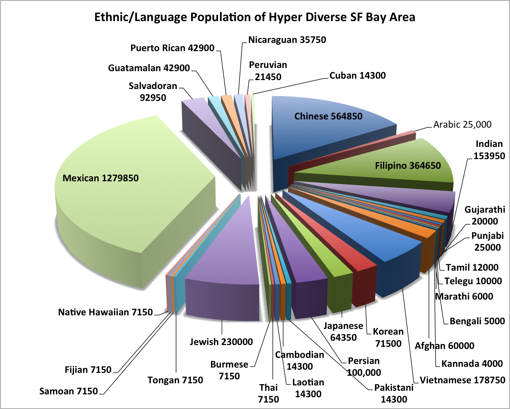

Unreached People Groups and Demographics of the SF Bay Area
By Tim Svoboda
YWAM San Francisco is wanting to start ministries amongst some of the key unreached people groups of the San Francisco Bay area. An unreached people group is a sociological grouping of people that shares a common affinity with one another and does not have an adequate amount of indigenous believers and resources amongst them to evangelize their own group of people. Joshua Project has determined the unreached status by those groups which have less than 2% evangelicals and less than 5% Christian adherents.
The gospel can easily spread amongst these people groups due to the common affinities that they share with one another. It is not the purpose to keep them isolated from other people groups but it is the purpose to use their common affinity to identify them for strategic purposes of knowing which groups have the gospel and which ones are yet to receive it.
There are 16,689 people groups in the world today of which 6898 are unreached with the gospel. Most of these unreached people groups are in the 10/40 window which are the countries in the eastern hemisphere between 10 and 40 degrees north of the equator. This would include countries in Saharan and North Africa as well as most of Asia. Many of these countries pose difficulties in preaching the gospel while others are still open.
With the massive globalization and urbanization of the planet some of these unreached people groups are now amongst us in the San Francisco Bay Area. Of the 6898 people groups that are unreached there are 60 that are in the United States. YWAM wants to work with churches that are doing ministry amongst these people groups, start churches where no mission or church is focusing on, engage in mercy ministries and help train the existing indigenous Christians so they can better reach their own people. The pie chart below lists some of those groups in the San Francisco Bay area. Our desire is to see these people reached with the gospel. If you’re interested in reaching these groups of people, write to us at info@ywamsanfrancisco.org.
